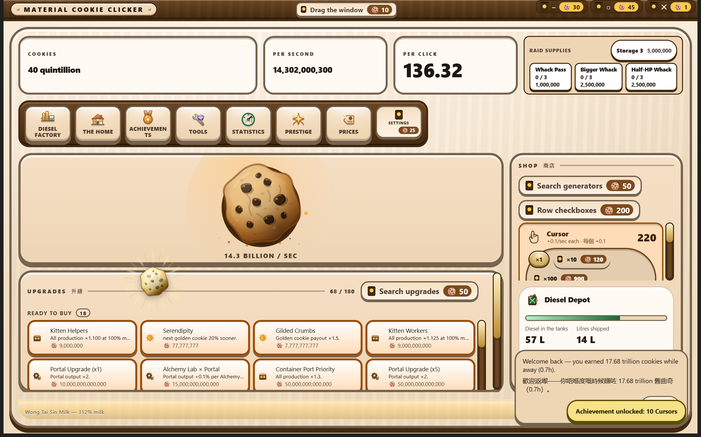
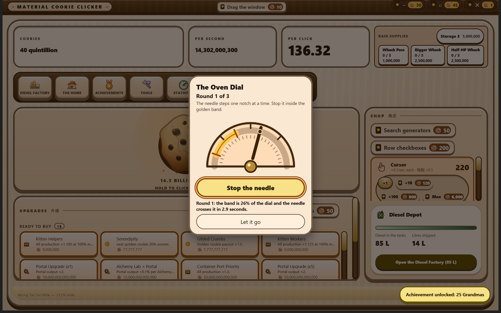
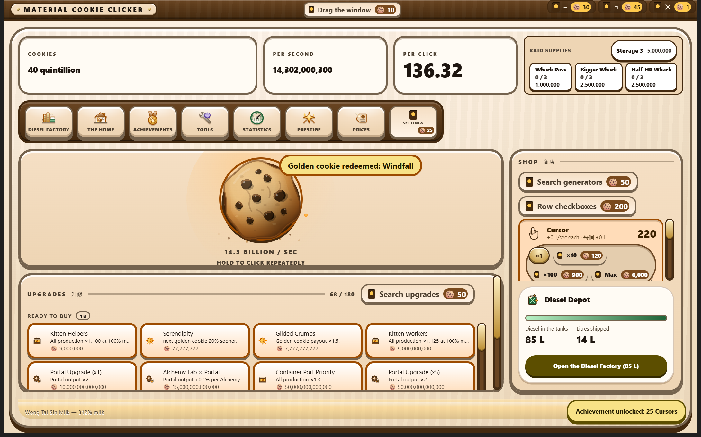

Golden-cookie events
It appears somewhere random on the stage. Catch it, then stop the needle in the band three times.
Shipped the golden cookie spawns as its own sprite at a random point on the stage and opens a puzzle when caught (src/shared/game/golden-cookie.ts, src/renderer/screens/GoldenCookieStage.tsx). Both photographs below are of that running.
From the running application

![The same surface with the whole window dimmed behind a cream rounded card headed The Oven Dial. Under the heading, in bold, Round 1 of 3, then the line Stop the needle inside the golden band. Below that a drawn half-circle gauge with a heavy dark outline: a thick golden band arcs across its upper right, hard marker lines at each end of the band, and a dark needle points up and to the left from a brass pivot boss, its tip carrying a dot that sits on the track well outside the band. A large golden button reads Stop the needle, and under it a line reads Round 1: the band is 26% of the dial and the needle crosses it in 1.8 seconds. A smaller button at the foot reads Let it go.](../assets/captures/golden-dial.png)

prefers-reduced-motion set. The needle steps between the drawn notches instead of sweeping, at a 1.6× slower cadence — the same game played as a rhythm.![The Oven Dial card over a dimmed dark-theme game surface, headed The Oven Dial with Round 2 of 3 in bold beneath it and the line Stop the needle inside the golden band. The drawn half-circle gauge is amber on dark brown; a golden band arcs across its upper left, noticeably shorter than the band in the round-one capture, with a hard marker line at each end, and the needle points up and to the right from a brass pivot, well clear of the band. A wide olive button carries the label Stop the needle in dark letters with a bright focus ring around it. Under the button a bold line reads In the band. Next round is tighter. A smaller outlined button at the foot reads Let it go.](../assets/captures/golden-dial-r2.png)
![A brand-new save on the plain, unbought look: a white page, the system font, square corners, a Cookies readout of 400, and four console buttons of which the SETTINGS one still carries a price of 25. The hero cookie in the middle of the large empty panel is a flat light-grey circle with the word COOKIE on it and no drawing at all. Lower right of that same panel, a golden cookie sprite is drawn in full detail: a shaded, chipped cookie shape rendered in silver-grey rather than gold, standing inside a burst of thin straight light shafts that are static rather than animating.](../assets/captures/plain-reduced-motion.png)
prefers-reduced-motion: reduce emulated over the debugging connection — the same preference a player who sets it in Windows gets — and the developer-only key material-cookie-clicker:golden:fast set so a sprite arrived in seconds rather than minutes.
What it does
Every so often a golden cookie appears somewhere random on the game stage as its own clickable sprite — 64 pixels of gilded cookie inside a 72-pixel hit area, scurrying a few pixels, with its own accessible name and an announcement through the status region.
Clicking it does not redeem anything. It catches the cookie and opens The Oven Dial: a needle sweeps back and forth across a gauge, and a golden band is painted on that gauge. Press Stop the needle while the needle is inside the band. Three rounds redeem the cookie. A miss shakes the card and burns two seconds off the golden window. The window running out, Escape, or a press on the dimmed surface behind lets the cookie flee — it despawns, the ordinary cooldown starts, and nothing already owned is lost.
Winning all three rounds runs the same collection the game always ran, so the reward is unchanged:
| Effect | What it does | Default |
|---|---|---|
| Frenzy | Multiplies all production | 7× for 77 seconds |
| Click frenzy | Multiplies click value | 3× for 13 seconds |
| Windfall | Instant cookie payout | 15 minutes of current CPS |
By default a golden cookie becomes eligible somewhere between 5 and 15 minutes after the last one, and stays catchable for 15 seconds. It may land anywhere from 12% to 88% across the stage and 16% to 78% down it, which keeps it clear of the HUD above, the console below and the shop rail at the right — a spawn can never land under chrome that would swallow the click.
A minigame, not a chance game
That is a requirement, not a description, and it is the reason the dial looks the way it does.
The needle’s position is an exact function of how long the round has been running — a triangle wave across the track with no easing, so no part of the track is worth more than any other. A press either was or was not inside the band, and the same press at the same millisecond lands the same way on every machine, every save and every seed. The reducer recomputes the needle’s position itself rather than trusting a number sent by the interface, so there is exactly one definition of where the needle is and a hand-built press cannot claim a hit it did not earn.
The difficulty curve is fixed, published, and the same for everybody:
| Round | Band width | Sweep, there and back |
|---|---|---|
| 1 | 26% of the dial | 1.80s |
| 2 | 19% | 1.40s |
| 3 | 13% | 1.05s |
Nothing in that table is rolled, scaled by progress, or adjusted to how well the player is doing. The one seeded value in the whole minigame is where on the face the band sits — and that cannot decide a round, because the band is drawn before the press. A visible target that moves between rounds is scenery, not luck; it exists so that three rounds are not three identical presses at the same spot. There is a test that presses at a fixed moment across fifty different random streams and asserts the verdict is the same in all fifty.
What this replaced, and why
This slot has held three mechanics, and each one’s data is deleted when the next arrives.
First, a ten-press countdown on the main cookie — the literal reading of a standing instruction that a golden cookie must be pressed ten times to redeem and must never redeem itself. Then Odd Cookie Out, a four-by-four grid with one subtly different tile. That one looked like a puzzle and behaved like a lottery: the odd tile was seeded, so pressing at random won a round one time in sixteen with no skill involved at all. The Oven Dial has no such hole.
The older ten-press instruction is still honoured in spirit: a catch plus at least three deliberate timed presses, with every miss costing seconds and another press. Redemption is never one click and never automatic.
Accessibility: what is and is not achieved
What is achieved. The game is one button with one fixed name (“Stop the needle”) — nothing to hunt for, nothing to compare, no spatial search, and Space or Enter is the entire input. The dial is a real slider whose accessible value text continuously states where the needle is and whether it is currently inside the band (“42%, outside the band” / “58%, in the band”), so the position is conveyed non-visually rather than only drawn. Each round is briefed in text before it is played — the band’s width as a percentage and the sweep time in seconds — so the difficulty is stated rather than merely felt. And with prefers-reduced-motion set, the needle does not sweep: it steps, one notch of twenty-four at a time, at a 1.6× slower cadence, with every position it can occupy drawn on the face. That is a rhythm game — countable, learnable, and playable without watching a moving object. The mode is fixed at the moment of the catch, so the position judged is always exactly the position shown.
What is not achieved. A player who cannot see the dial at all is relying on accessible-value updates whose timing no specification guarantees, and in continuous mode that is not good enough to hit a 13% band reliably. The honest mitigation is the one the whole feature rests on: failing costs nothing already owned. A miss burns two seconds of the cookie’s own window and nothing else, and a timeout or an Escape simply lets a bonus go. Golden cookies sit on top of the game rather than across it, so no progress, no purchase and no achievement is gated behind beating this dial.
And one contrast fault the round-two capture found by being looked at. While the pointer is resting on it, the Stop the needle button swaps its background to the bright --spark token but keeps its --on-tertiary-container label colour. In the dark theme those are pale yellow on bright yellow: a measured contrast ratio of 1.05:1, against 7.29:1 for the same label in the button’s resting state. For the seconds a player is hovering the only control this minigame has, its label is effectively invisible. It is named here rather than cropped out, and it is not fixed in this release — the frame above was taken with the pointer moved away so that it shows the round rather than the fault.
The card keeps the same dialog contract the game’s console panels keep, scaled down: a real modal dialog labelled by its own heading, focus moved in and trapped, Escape closing it, and focus restored afterwards to the main cookie.
Seeded, not random
The spawn moment, the spawn position, the effect roll and the band’s position all come from a small deterministic PRNG (splitmix32) with an explicit stream position that is saved and restored with the game. Math.random() is never called anywhere in this module. The needle takes no random input at all — it is a function of elapsed time and nothing else.
How it is configured
Minimum and maximum delay, the catchable window, both multipliers, both durations and the windfall payout are all fields of one configuration object with a documented default set. The spawn bounds and the dial’s numbers — three rounds, the round curve, twenty-four steps, the stepped slowdown, the two-second miss penalty — are named constants in the same module rather than numbers buried in the code. The golden treatment uses the tertiary colour role exclusively, so the accent keeps meaning something and is never reused for ordinary chrome.
A save written while a cookie is caught carries its position and its open round through unchanged. No save ever carries an open minigame across a version, and that is deliberate: a half-finished round of a game that no longer exists cannot be translated into a round of the game that replaced it, so the stale data is dropped and the schedule simply hands out a fresh spawn.